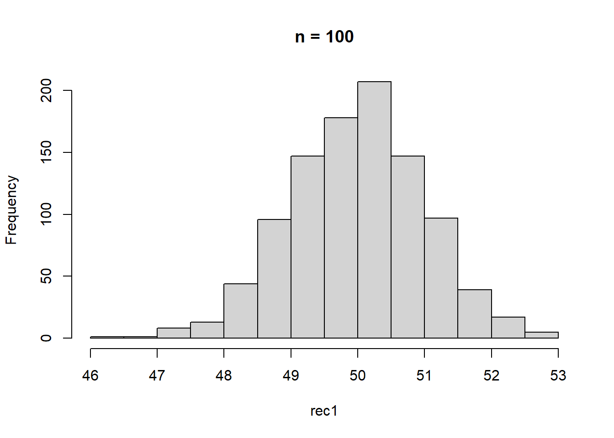

Week2 | Rによる自主勉強会
伊﨑 直志
2023年10月13日
第１章 回帰分析の目的
1.1. 相関と因果
相関関係 correlation：「Xが変化すればYも変化する」
因果関係 causality：「Xを変化させればYも変化する」
疑似相関 spurious correlation
「変数XとYに共通の第3の要因Zが存在することによってXとYに生じる見せかけの相関関係」
e.g. 個人所得の増加→タバコへの支出増加、医療・健康への支出増加 ＝タバコと健康の疑似相関
- 時間的先行性: 原因となる現象が結果となる現象に時間的に先立って起きている。
- 共変関係（相関関係）: 原因となる現象が変動すると、結果となる現象も変動する。
- 他条件の同一性: 原因となる現象の双方に与える現象は存在しないか、その影響は統制されている。
1.2. 回帰と予測
一次関数 \(y=a+bx\) の形で表現 →最小二乗法（least squares estimation）（図1.1 →図1.6）
回帰直線、回帰式、回帰係数
回帰式の一方の変数に代入してもう一方の変数の値を計算、予測
＝ある変数Xの値をもとにして、他の変数Yの値を予測 ＝回帰分析
X：説明変数、Y：被説明変数
⇒因果解釈ではなく、あくまで予測解釈！
回帰分析 →Xが与えられた時のYの値の予測
1.3. 自然科学のデータと社会科学のデータ
実験の難しさ（費用等コスト、倫理）
⇔自然科学：変数選択の制約・影響少、実験室実験可（変数統制） [従来的説明]
→現在、社会科学における実験多数：実験経済学等 or 自然実験…（後述）
第２章 統計の基礎知識
2.1. 母集団と標本
-（有限集団全体）母集団－（抽出）標本 - （確率分布）母集団－（観測値）標本 （←本書）
正規分布 normal distribution
正規分布\(N(平均, 分散=標準偏差^2)\)
正規分布（乱数）: rnorm(個数, 平均, 標準偏差)
rnorm(100, 50, 10) ## [1] 46.38028 59.22160 56.49470 37.88071 50.07094 37.44529 41.92874 60.17615
## [9] 60.72471 46.01527 42.95046 37.38001 38.16379 46.80812 60.21071 60.68641
## [17] 37.78924 49.77435 39.27168 42.54764 52.96951 42.74259 48.40620 39.57078
## [25] 41.14301 68.83428 45.71025 64.26951 66.40694 65.60227 37.43635 53.55145
## [33] 33.16353 56.01879 60.49836 52.70927 40.97435 50.38164 41.74298 60.91069
## [41] 44.23658 58.61249 40.16788 59.74106 51.64643 46.22286 66.59208 33.77697
## [49] 33.15547 67.05576 61.57455 57.58062 44.78294 35.53252 57.01441 36.00646
## [57] 38.81741 33.11621 61.17009 47.93380 47.93147 41.38562 53.34884 53.50876
## [65] 59.69969 46.76269 55.86361 59.06930 45.15489 60.74620 31.96253 39.62010
## [73] 36.59287 53.42944 43.39236 31.75633 45.98787 44.01706 44.56306 34.79288
## [81] 66.21305 44.16045 40.83936 53.26470 45.31220 64.63595 69.65805 48.20095
## [89] 54.63158 41.52704 47.92735 37.79046 31.44583 64.67727 42.97743 55.40122
## [97] 34.72749 62.35336 49.27124 55.83043curve(dnorm(x,50,10),0,100) #正規分布のグラフ描画
pnorm(60,50,10) #大きさ１の標本の値が60より小さくなる確率## [1] 0.8413447| 命令 | 説明 | （英略） |
|---|---|---|
rnorm(n, a, b) |
平均a, 標準偏差bの正規分布乱数をn個発生させる。 | random+norm |
dnorm(x, a, b) |
平均a, 標準偏差bの正規分布について, 密度関数の点xにおける値を計算する。 | density+norm |
pnorm(x, a, b) |
平均a, 標準偏差bの正規分布について, 分布関数の点xにおける値を計算する。 | probability+norm |
正規分布グラフ 描画関数
curve(dnorm(x, a, b), min, max) #curve(関数の式,
横軸の最小値, 横軸の最大値)
2.2. 無作為抽出
母集団から標本を抽出 random sampling
Z <- rnorm(100,50,10)
hist(Z) #ヒストグラム
Z[1:10] #最初の10個のデータを抜き出し## [1] 55.01528 34.15061 35.84218 59.21614 39.83304 37.57822 52.97183 48.81966
## [9] 49.23763 56.96879Z[5]; Z[10]; Z[100] #5番目,10番目,100番目の位置にある数字を抜き出し## [1] 39.83304## [1] 56.96879## [1] 52.60286Z[c(5,10,100)] #aを使わずに同上の操作## [1] 39.83304 56.96879 52.60286#特定の意味を持つ数値を抽出
max(Z) #最大値## [1] 89.99847which.max(Z) #最大値が何番目か## [1] 44min(Z) #最小値## [1] 31.04181which.min(Z) #最小値が何番目か## [1] 51mean(Z) #平均値## [1] 51.14755summary(Z) #基本統計量一括表示## Min. 1st Qu. Median Mean 3rd Qu. Max.
## 31.04 43.86 49.54 51.15 56.88 90.00#p.19下段
1:10## [1] 1 2 3 4 5 6 7 8 9 10sample(1:10,3) #無作為抽出、sample(範囲, 抽出個数)## [1] 10 3 1sample(Z,5) #sample(標本, 抽出個数)## [1] 46.79238 52.97183 59.59479 49.36307 65.62556sample(Z,5) #sample(標本, 抽出個数)## [1] 63.82356 55.01528 64.09688 51.76568 56.95044fruits <- c("ミカン","バナナ","リンゴ","レモン","モモ")
fruits## [1] "ミカン" "バナナ" "リンゴ" "レモン" "モモ"sample(fruits, 1) #fruitsから1個抽出## [1] "ミカン"sample(fruits, 2) #fruitsから2個抽出## [1] "ミカン" "リンゴ"sample(fruits, 1) #fruitsから1個抽出## [1] "バナナ"sample(fruits,1) #fruitsから1個抽出## [1] "ミカン"コイン投げ
coin <- c("Head", "Tail")
#sample(coin, 5) #うまくいかない, 非復元抽出になっている
sample(coin,5,replace = TRUE) #復元抽出, replace=TRUE## [1] "Tail" "Head" "Head" "Head" "Tail"2.3. 平均と大数の法則
- ①ベクトルrecのi番目の場所rec[i]に
- ②母集団N(50,10^2)から抜き出した大きさ100の標本の平均を格納する
mean(Z) #標本平均## [1] 51.14755mean(rnorm(100,50,10))## [1] 49.91936mean(rnorm(100,50,10)) #Z<-rnorm(100,50,10)## [1] 49.65618#より多い試行、抽出1000回、標本の大きさ100
S <- 1000
rec1 <- numeric(S)
for(i in 1:S){rec1[i]<-mean(rnorm(100,50,10))}
rec1## [1] 51.20206 51.90569 51.05198 49.18356 49.99865 50.38979 51.03385 48.72311
## [9] 47.67201 48.76667 49.03922 49.48179 48.99265 49.35583 51.44912 48.87763
## [17] 50.12814 49.34029 49.95165 51.27461 49.75225 52.16396 48.41043 49.05226
## [25] 49.59255 49.05353 50.44732 50.91831 50.77336 51.01189 50.31990 51.55337
## [33] 49.01391 49.40568 50.87797 52.53291 50.01234 48.85415 50.66805 47.91098
## [41] 49.67415 52.26236 50.75235 49.01953 51.10484 50.41832 49.81769 51.15661
## [49] 50.29176 49.33255 50.25529 52.48412 50.55198 50.37682 48.72158 49.04866
## [57] 49.10704 50.79309 49.72495 51.05630 51.18529 49.01711 49.54497 50.43022
## [65] 51.72212 50.42323 49.19946 51.35465 49.02192 49.31982 49.19759 51.03230
## [73] 49.18304 49.15450 50.44499 50.72940 50.06500 49.66126 49.95741 48.53064
## [81] 50.03892 51.15489 49.62707 49.01723 48.76206 51.23963 48.71590 50.09079
## [89] 50.59946 47.90715 50.81633 50.03859 50.32947 50.45070 48.64140 49.19609
## [97] 49.33383 49.30451 50.64763 50.48978 51.25931 50.17652 49.13546 51.06223
## [105] 49.72091 49.42048 51.11295 49.90183 49.21813 51.45489 50.52318 50.10260
## [113] 49.92447 49.27362 49.20722 50.72041 50.45586 50.33705 50.07776 49.58179
## [121] 50.36393 49.13541 49.83203 50.82341 50.15169 49.36661 50.06564 50.40836
## [129] 50.12627 48.10155 50.80363 50.34173 50.62962 48.96239 49.54940 51.36347
## [137] 50.51494 48.83534 49.99506 49.47351 51.68831 49.84880 49.78154 50.64430
## [145] 51.43878 51.35458 50.01177 49.45980 48.06508 50.85036 50.22301 50.82844
## [153] 48.63711 50.31974 48.95370 48.42463 49.80124 49.71974 49.07314 49.00781
## [161] 47.76169 50.05017 51.58304 50.26234 48.62913 51.03745 49.74811 51.36851
## [169] 49.97870 47.63030 51.43511 50.09516 51.05716 49.68260 50.05926 49.81238
## [177] 50.90121 49.39764 47.80741 49.36422 49.36078 49.42963 48.73822 52.05877
## [185] 49.69833 49.88804 49.63314 50.35778 48.57163 49.34926 49.59719 49.76973
## [193] 51.14144 50.38074 50.82837 49.86573 49.83246 50.52251 49.86101 50.91719
## [201] 50.03575 48.76217 49.30122 48.43312 49.46300 48.56026 51.13414 49.47547
## [209] 51.68214 50.47493 50.10378 49.02491 49.42105 49.46163 50.22242 50.53645
## [217] 50.25741 50.47641 48.91273 49.84505 48.38424 49.75071 51.08950 49.21737
## [225] 50.00017 50.02373 50.19111 52.81288 51.32824 49.61399 51.03729 49.07330
## [233] 51.55095 49.57794 50.15640 50.74224 53.33051 48.99335 50.18089 49.18223
## [241] 48.56595 49.97354 49.30951 50.76793 48.36075 50.45630 50.37965 48.88222
## [249] 50.81758 49.48610 48.96658 50.83576 50.87082 48.93944 49.31079 48.98252
## [257] 48.95570 51.25695 49.78388 49.59074 52.76570 50.84024 49.44479 51.38089
## [265] 49.96882 50.23742 50.98526 50.74540 49.81279 50.76514 49.31481 49.98428
## [273] 47.89678 49.46582 48.05793 50.88794 49.83044 49.34150 50.48668 50.26746
## [281] 50.49116 50.02401 49.94716 49.40602 49.86200 49.49010 50.72110 50.93533
## [289] 50.17593 48.74281 51.08209 50.71486 50.29008 50.58209 49.55506 50.16321
## [297] 49.39598 50.04684 50.77662 50.58287 49.99069 49.81043 50.12196 49.64170
## [305] 48.91126 50.74338 47.99168 50.94589 49.90652 50.69753 50.73577 51.58076
## [313] 52.12785 49.82186 51.80797 50.37801 49.25936 49.17037 49.60928 49.72511
## [321] 51.66543 50.73051 49.55251 51.66600 48.98698 50.05641 50.44971 49.91880
## [329] 51.35790 50.02263 50.45417 50.47619 50.89151 48.52356 50.30205 49.61517
## [337] 48.60449 50.23776 49.19035 50.82668 50.47692 50.11733 49.12595 50.42279
## [345] 50.35332 49.31543 49.31164 50.98474 50.68580 50.28585 51.00658 51.66475
## [353] 52.55574 50.19919 51.34548 49.19965 50.67346 49.89605 50.34717 51.04786
## [361] 49.13234 48.92941 49.86261 51.61282 50.72063 49.73344 49.74529 49.39176
## [369] 48.76520 49.53899 49.81130 51.10599 50.68255 49.12770 48.13676 51.06317
## [377] 48.19621 49.76544 50.41288 49.61861 50.00691 49.38012 49.82323 50.15181
## [385] 51.71212 49.73086 49.68290 51.73625 51.59071 50.12803 51.08803 50.44321
## [393] 48.86635 50.00370 51.40882 48.80886 49.86327 50.68885 48.79796 48.33259
## [401] 50.64735 51.17536 48.70053 49.35290 50.88317 51.12498 50.26669 50.21913
## [409] 50.25910 49.59565 48.09413 48.87561 49.11301 49.04589 51.61695 49.37992
## [417] 49.97764 50.79807 49.89696 50.32430 50.38097 50.27365 50.12290 51.45602
## [425] 49.19980 50.15168 50.40711 49.25977 47.71414 50.94852 49.22634 50.69719
## [433] 50.02043 50.74180 48.78510 48.46765 49.41015 49.56529 49.76798 51.12655
## [441] 50.89794 49.06946 51.89611 50.63917 51.00613 49.64154 48.86750 49.18547
## [449] 49.73892 51.13739 50.88300 49.01828 50.92083 48.50816 50.28765 49.89780
## [457] 48.56189 49.56399 47.68934 49.17832 46.79876 49.86702 49.93437 50.58387
## [465] 49.22210 50.48154 48.59255 48.29597 52.99290 49.44567 49.27541 49.44215
## [473] 49.70904 49.17713 49.30362 49.11196 49.62066 49.45575 49.24548 49.57241
## [481] 50.78084 49.23411 50.67619 49.34253 51.59258 48.72763 49.62232 51.00839
## [489] 49.77266 50.40077 51.18555 50.69511 51.04756 49.77133 49.85244 50.28296
## [497] 50.11606 51.10281 49.72109 50.53065 49.85909 50.28996 50.54750 50.77164
## [505] 51.87974 50.95063 50.40056 50.17439 51.08766 49.26288 49.35803 50.98899
## [513] 48.40438 50.87909 50.00055 50.86332 50.14918 50.47751 50.66556 49.26692
## [521] 48.39250 49.61649 50.51110 48.47571 50.46694 50.98770 49.50765 49.98053
## [529] 48.87546 49.12004 50.62980 49.94254 49.20278 49.30247 48.72755 51.06133
## [537] 48.85919 51.05528 49.26467 50.36548 50.12120 50.69487 47.95941 50.44116
## [545] 51.29152 50.86320 49.26601 49.32822 50.74942 49.26818 48.49165 49.20373
## [553] 49.08599 50.18970 49.10628 49.55076 48.88362 51.11502 49.29945 49.63490
## [561] 49.44478 51.33930 49.69001 49.32036 48.44774 46.89632 49.34568 51.10217
## [569] 49.83627 49.17426 50.23737 49.19356 49.30456 48.80969 51.02025 51.03156
## [577] 50.08963 50.86179 50.86468 50.21312 48.94731 49.38417 50.96829 51.73428
## [585] 47.54466 48.63036 51.22516 51.03096 49.78415 49.42833 50.74956 50.07330
## [593] 49.14887 50.98370 49.56100 47.13672 50.83660 50.56612 48.99931 49.10648
## [601] 50.86696 51.68041 48.93102 50.44454 47.77484 49.85771 50.59365 51.08474
## [609] 49.85354 50.82622 49.88774 50.17317 49.97620 48.30054 52.55632 50.25988
## [617] 51.70591 50.12424 50.56463 50.89283 48.40039 50.32163 51.80325 51.34124
## [625] 50.61416 49.84554 51.97655 51.21254 49.80172 49.97965 49.14073 49.71770
## [633] 50.61905 49.63398 50.54908 50.73824 49.20420 49.77162 49.90327 49.37877
## [641] 49.59928 48.40706 49.58445 50.71957 48.93733 50.07692 50.18914 49.99291
## [649] 49.75430 50.55404 49.79665 49.18803 51.38609 50.85323 50.47843 48.88104
## [657] 50.11083 50.77699 52.40708 48.56601 50.51851 48.54224 50.22285 49.55586
## [665] 50.62473 48.63700 50.97244 50.05927 50.33728 49.96540 50.71879 49.34177
## [673] 50.08576 50.04269 49.38623 47.94767 49.19201 49.24562 50.15230 50.07147
## [681] 50.56878 52.67751 49.00486 50.88858 50.46033 50.52239 52.06168 50.18355
## [689] 49.67977 48.87498 51.51912 49.06760 49.64252 50.96619 49.79487 48.91294
## [697] 51.13103 50.40898 50.17087 49.45109 49.89135 49.39569 47.91252 48.58366
## [705] 49.55128 49.37340 49.32169 48.93303 50.97198 50.53265 51.47265 50.21781
## [713] 49.95651 51.28759 50.07762 51.18504 50.36423 49.74440 50.43593 50.47355
## [721] 48.34151 51.68156 49.19356 51.14472 49.47116 50.53756 50.03977 52.02007
## [729] 49.58652 50.85135 49.52291 51.88292 48.57168 49.39946 50.53542 50.15717
## [737] 49.12020 49.88062 50.05015 47.76639 49.01004 50.79288 48.10693 49.88634
## [745] 48.04334 48.63090 48.85756 48.92301 49.32060 49.42392 50.04395 50.82037
## [753] 49.72668 49.80252 50.98347 50.59689 49.63649 51.47506 50.23710 50.33048
## [761] 48.71229 48.57910 49.32894 48.39657 49.66082 50.77419 49.65707 49.99285
## [769] 49.18267 50.74567 49.93061 49.62972 50.27176 51.63587 48.71773 50.73679
## [777] 51.41467 51.00556 50.09376 49.84949 50.81309 48.77826 51.00838 49.40257
## [785] 49.30874 50.32377 50.72671 50.52122 49.27389 49.72079 49.96996 49.64623
## [793] 49.35285 49.52251 50.78428 50.76433 51.36850 50.38585 49.73260 51.92979
## [801] 49.73319 49.24184 51.68552 49.62717 50.88632 49.25447 48.38673 49.96486
## [809] 50.30728 49.44293 52.95222 51.35741 49.83405 50.59851 49.55334 50.58067
## [817] 48.85300 50.89415 49.92315 50.22988 50.26970 51.22802 48.80115 48.08967
## [825] 50.97580 51.30351 48.29125 49.87720 50.79619 50.66122 49.90300 48.84231
## [833] 50.59026 49.41543 49.66957 49.03631 50.37693 50.01905 50.49317 47.86587
## [841] 51.16233 49.94387 51.27240 49.75838 49.49070 49.39413 50.78770 50.97040
## [849] 47.77051 49.69052 49.84888 48.99661 49.47658 50.12858 50.53676 50.97487
## [857] 51.49398 50.22955 48.88125 48.37816 50.71373 49.59819 52.00034 49.53353
## [865] 48.84435 49.74862 50.62930 51.15503 52.17638 50.19880 48.32932 49.57449
## [873] 51.86549 50.46295 50.51667 49.62251 49.14666 51.10550 50.36299 48.10416
## [881] 49.34112 51.48286 50.97357 49.69673 47.44997 50.12403 51.03803 50.03552
## [889] 51.25619 50.66370 48.02299 50.28609 49.49325 49.67033 50.17650 49.35161
## [897] 51.18516 50.70656 51.63334 49.18343 49.47101 50.34478 48.08186 48.10406
## [905] 51.55436 52.80413 50.19252 51.48387 49.31446 51.63173 49.29870 49.07191
## [913] 50.90282 49.17944 49.59350 47.75968 52.40758 50.08891 47.13036 51.25533
## [921] 51.15340 49.02928 49.08068 51.25579 50.87940 49.21334 49.73590 49.70042
## [929] 49.87142 49.77340 49.41843 51.22602 51.24590 48.83493 49.82555 49.98455
## [937] 50.10706 49.28455 50.29041 50.40021 50.23435 50.64523 50.57841 49.39628
## [945] 50.60152 49.18909 50.38063 49.80256 50.24809 49.48216 50.55337 50.50360
## [953] 48.55163 50.87417 50.30854 49.44764 50.52968 51.13433 51.21747 50.97105
## [961] 50.65107 49.79550 48.36317 50.63826 49.83787 51.47408 49.04670 49.19983
## [969] 50.52082 50.82994 50.07451 50.87215 51.68159 50.29711 49.31765 48.64703
## [977] 50.20658 49.78474 51.19530 50.08041 50.46391 48.56135 51.77060 48.91928
## [985] 49.76022 49.86645 50.34171 50.73048 48.82217 49.69753 49.42179 49.33363
## [993] 51.83599 49.71523 49.68818 51.02447 51.09634 49.37508 50.44282 49.38174hist(rec1, main="n=100") #main="n=100", ラベル
summary(rec1)## Min. 1st Qu. Median Mean 3rd Qu. Max.
## 46.80 49.32 50.00 50.01 50.72 53.33【大数の法則】 母集団から無作為に抜き出された標本の平均値は、標本の大きさが大きいほど、母集団平均に近い値をとる。
サイコロ：母集団平均3.5
\(1*1/6+2*1/6+3*1/6+4*1/6+5*1/6+6*1/6=3.5\)
⇒大数の法則をスクリプトで確認
sample(1:6, 10, replace = TRUE) #サイコロを10回振る試行## [1] 5 2 4 5 1 4 1 6 4 2mean(sample(1:6, 1000, replace = TRUE)) #サイコロを1000回振った結果の目の平均値, 3.5に近似## [1] 3.427#サイコロ10回の標本平均×1000
S <- 1000
rec2 <- numeric(S)
for(i in 1:S){rec2[i] <- mean(sample(1:6, 10, replace = TRUE))} #サイコロ10回の標本平均×1000
summary(rec2)## Min. 1st Qu. Median Mean 3rd Qu. Max.
## 2.000 3.100 3.500 3.495 3.900 5.200#サイコロ1000回の標本平均×1000
S<-1000
rec3 <- numeric(S)
for(i in 1:S){rec3[i]<-mean(sample(1:6,1000,replace=TRUE))} #サイコロ1000回の標本平均×1000
summary(rec3)## Min. 1st Qu. Median Mean 3rd Qu. Max.
## 3.294 3.464 3.501 3.501 3.536 3.712#サイコロ10000回の標本平均×1000
S <- 1000
rec4 <- numeric(S)
for(i in 1:S){rec4[i] <- mean(sample(1:6, 10000, replace = TRUE))} #サイコロ1000回の標本平均×10000
summary(rec4)## Min. 1st Qu. Median Mean 3rd Qu. Max.
## 3.439 3.488 3.499 3.499 3.510 3.5712.4. 分散と標準偏差
var() |
分散 |
|---|---|
sd() |
標準偏差 |
標本平均 →標本のちらばり
- 分散 variance 標本が平均値を中心にどれだけ散らばっているかを表す指標
- 標準偏差 standard deviaton 分散の平方根、標本が平均値を中心にどれだけ散らばっているかを表す指標（同上） 参考
分散は、計算過程において２乗しているので観測データの単位と異なります。例えば観測データの単位がg（グラム）である場合、分散の単位はg2になります。そこで、分散の平方根である標準偏差を求めることによって、観測データとの単位を揃えることが出来ます。そうすることで、分散よりも扱いやすい値となります。 出典: 標準偏差の意味と求め方 | AVILEN AI Trend
#母集団N(50,10^2)から大きさ1000の標本を無作為に抽出
x <- rnorm(1000, 50, 10)
var(x) #分散## [1] 106.5501sd(x) #標準偏差 #10に近似## [1] 10.32231#分散・標準偏差における大数の法則
#n = 1000
S<-1000; n<-1000
rec<-numeric(S)
for(i in 1:S){rec[i]<-sd(rnorm(n, 50, 10))}
summary(rec) #標準偏差10に近似## Min. 1st Qu. Median Mean 3rd Qu. Max.
## 9.309 9.830 9.972 9.983 10.131 10.745#n=10000
S <- 10000; n <- 10000
rec <- numeric(S)
for(i in 1:S){rec[i]<-sd(rnorm(n, 50, 10))}
summary(rec) #より10に近似＝大数の法則## Min. 1st Qu. Median Mean 3rd Qu. Max.
## 9.725 9.952 10.001 10.000 10.049 10.2662.5. 相関係数と共分散
plot() |
散布図 |
|---|---|
cor() |
相関係数 |
cov() |
共分散 |
x <- rnorm(100, 50, 10)
y <- rnorm(100, 50, 10)
plot(x, y, main = "散布図(x, y)") #x,yの散布図
#xと関係のあるzを追加
z<-(x+y)/2
plot(x, z, main = "散布図(x,z)") #x,zの散布図
共分散: 2変数の関係の強さを表す指標の一つ。
〈手順〉
- それぞれの変数の平均値を求める
- それぞれの変数の偏差（数値 － 平均値）を求める
- 偏差の積の平均値（＝共分散）を計算する
ただし、データの単位の影響を受けるので値の大きさで単純に比較できない（データスケールに応じて変 化してしまい、共分散の数値だけを見て関係性を判断することは難しい）
⇒ 正規化・標準化の必要＝相関係数
相関係数: 2つの確率変数間の線形関係の強さをはかる指標、
-1以上+1以下の値を取り、1に近づくほど正の相関、-1に近づくほど負の相関